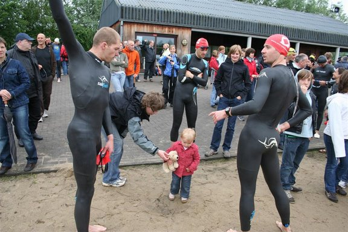
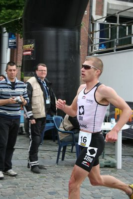

Zondag 17 mei stond een halve triatlon in Leuven op het programma. Joury Gokel belandde, buiten zijn eigen verwachtingen om, op het podium en dit is zijn relaas van de wedstrijd:
Zondag 17 mei stond een halve triatlon in Leuven op het programma. Joury Gokel belandde, buiten zijn eigen verwachtingen om, op het podium en dit is zijn relaas van de wedstrijd:
Na Geel vorig weekend stond ik dit weekend aan de start in Leuven. In Geel had ik al een goed gevoel tijdens de wedstrijd maar de achterstand op de goeie zwemmers was te groot om nog vooraan te kunnen meestrijden waardoor ik uiteindelijk (slechts) 13de eindigde.
Wanneer ik vooraf de startlijst van Leuven bekeek wist ik dat een top-10 plaats al super ging zijn. Maar ik wou deze wedstrijd vooral gebruiken om zelfvertrouwen te krijgen naar Klagenfurt toe en ik wou er dan ook alles aan doen om een mooi resultaat te behalen.
Katrien en ik waren al op zaterdag afgereisd naar Leuven om de nacht daar in een gehuurd appartementje door te brengen wat me de kans gaf om op het gemak het parcour eens te verkennen en alles klaar te maken zonder me zondag nog druk te moeten maken.
Binnen het SMO-team kende iedereen zijn taak (voor zover je vooraf scenario’s kunt uitschrijven natuurlijk). Frederik (De Vreese) moest zorgen dat hij mee was in het zwemmen. Michael (Dewilde) moest de schade in het zwemmen beperken en in het fietsen dan proberen op te rukken en ik wist dat ik voor Michael uit het water moest komen om een kans te maken om nog vooraan te geraken. In het fietsen moest ik dan zorgen dat ik mee was wanneer Michael me zou passeren. Het ziet er allemaal makkelijk uit, in theorie natuurlijk.

Het zwemmen begon al zeer slecht, ik werd langs alle kanten overzwommen en startte zeer traag. Na wat vechten kon ik eindelijk wat ruimte vinden en mijn opmars naar voor proberen te maken. Ik moet echt werken aan mijn zwemstart want daar verlies ik altijd veel te veel. Net niet meer bij een groepje geraakt met o.a. Koen Hoeyberghs en als 11de de wissel binnengekomen.
Al van bij het begin van het fietsen had ik last van mijn linker hamstring die verkrampte en het kostte me dan ook veel moeite (en een 10-tal kilometer) om uiteindelijk aansluiting te krijgen bij Koen. Enige tijd later kwam Stijn Demeulemeester voorbij aan een moordend tempo, Koen probeerde mee te schuiven en met zeer veel moeite probeerde ik ook te volgen. Geleidelijk aan verloor ik meer terrein toen ook Michael me al roepend passeerde dat ik moest zorgen dat ik terug mee was. Tja, wat doe je dan, tandje bijschakelen en alles uit de kast om toch maar weer er naar toe te rijden. En zo ging het de ganse tijd verder, iedere keer wat terrein verliezen en dan proberen er terug bij te geraken. Een tijd was ik aan het denken dat ik niet meer ging kunnen lopen want de kramp werd altijd maar erger. Maar omdat het tempo in de laatste 8km serieus de laagte in ging kon ik nog net op tijd wat recupereren.

Na een rappe wissel kon ik net na Frederik het lopen aanvatten met nog altijd tot over mijn oren verzuurde bovenbenen. Koen (Hoeyberghs) en Stijn(Demeulemeester) liepen kort voor mij uit maar die liepen gelijdelijk wat verder weg. Na een 5-tal km begonnen mijn benen ineens warm te draaien en ging de verzuring als het ware weg. Ik begon soepeler te lopen en kon voorbij Koen en daarna ook Stijn gaan. Op dat moment liep ik 2de, ik kon het amper geloven. Halfweg de laatste ronde kwam opeens Koen me terug voorbij, ik was zeker niet trager gaan lopen maar Koen had nog een serieuze versnelling in de benen. Ik probeerde nog aan te klampen maar dat ging te snel. Koen slaagde er zelfs nog in om voorbij Thierry Verbinnen te gaan die al de ganse wedstrijd alleen op kop gelegen had. Ik strandde op een zeer mooie 3de plaats slechts 20sec na Koen en 10sec na Thierry.
Frederik (Devreese) kon in het lopen nog zeer goed stand houden en finishte als 6de, een moe gestreden Michael werd nog 11de.
Een zeer geslaagde wedstrijd voor mij en nu op naar Sint-Laureins waar we weer een pak andere tegenstanders gaan moeten bekampen.
Timothy Saey en Dirk Hellebuyck eindigden respectievelijk 117e en 193e. Hier kan je de uitslag terugvinden.